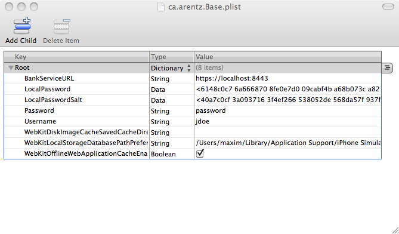

Lab 4 - Basic Encryption
Lab
In this lab we will extract some sensitive information from the filesystem of the device. In this case the information we need will not be encrypted, and we simply need to find it.
As mentioned previously, if you are using the simulator, you can find files stored by the application in ~/Library/Application
Support/iPhone Simulator/<GUID>/Applications/Base.app. If you are using a device, you will need to ssh into the device all look in /private/var/mobile/Applications/<GUID>
iOS stores properties in plist files. We open up the ca.arentz.Base.plist file in the /Documents/ directory under the applications directory. 
As you can see, the username and password is stored in cleartext here. We can use this in order to log into jdoe’s account. You will also see some binary data under the LocalPassword and LocalPasswordSalt properties. This is a hash and a salt used to check the local password in the application that we had to set ourselves. As you can see, the local password is hashed, but since we can get the jdoe / password used for the backend, we don’t need to do anything to break the hash.
Solution
We need some way to encrypt the jdoe / password username and password and store it on the device. The app should be able to extract the username/password combination when it needs to access the server, but an attacker in our situation should not be able to extract them.
You may be asking youself “why not just use a session token here?” We do! We store a session token in memory for a short period of time while the app is active (more about this token later). But even if we do use a session token, if an attacker can access it the same way they can access the username/password, we would face the same problem. An attacker can find the session token and log into your account.
We solve this by encrypting the username and password. The obvious question here is “where do we store the key?” For now, we will hardcode a key into the application. This is bad! In a later lab, we will show you how to break this, but for now, here is how our (broken) encryption looks like:
Liquid error: fork() function is unimplemented on this machine